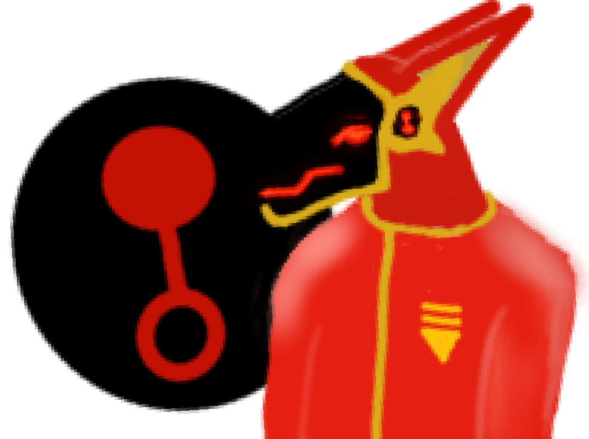
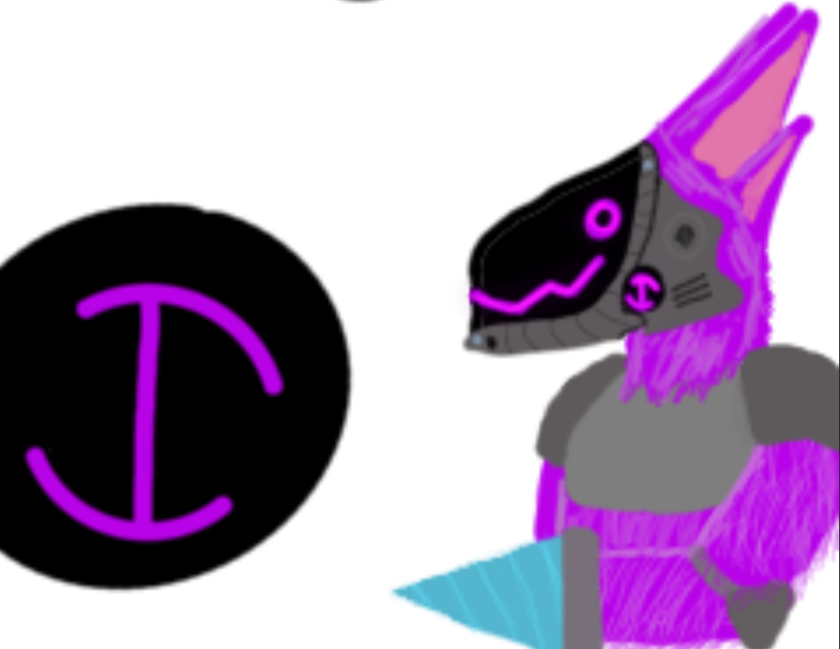
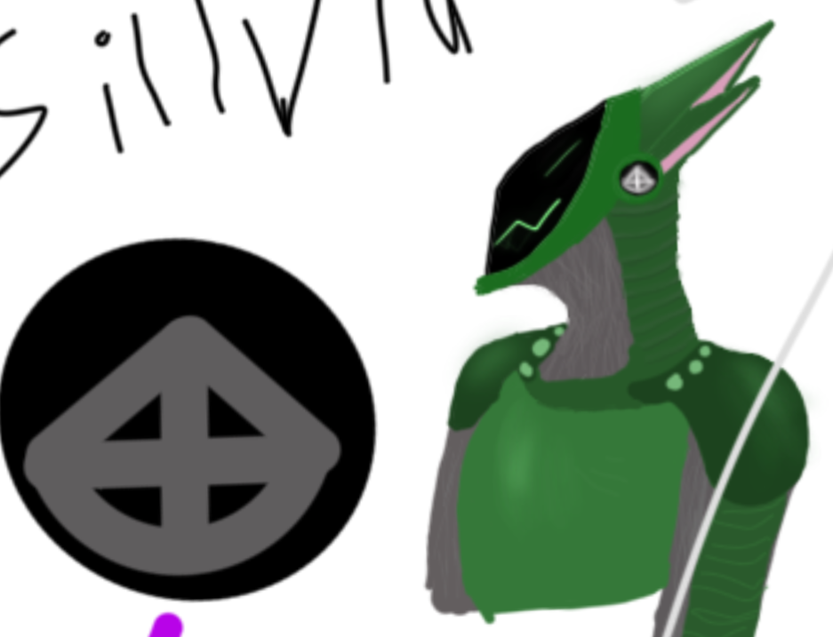
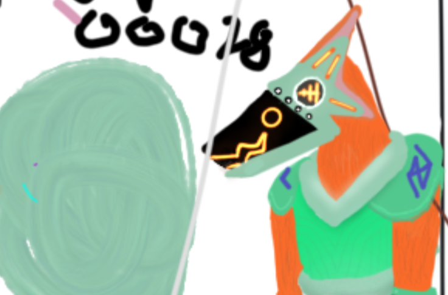
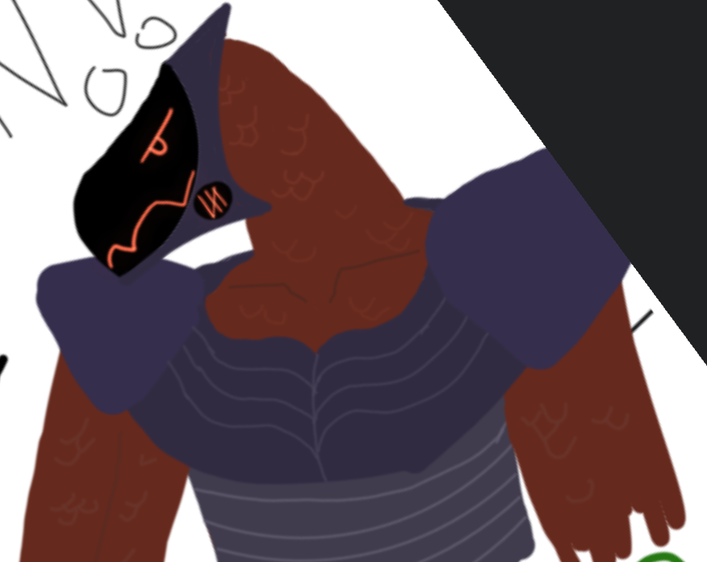
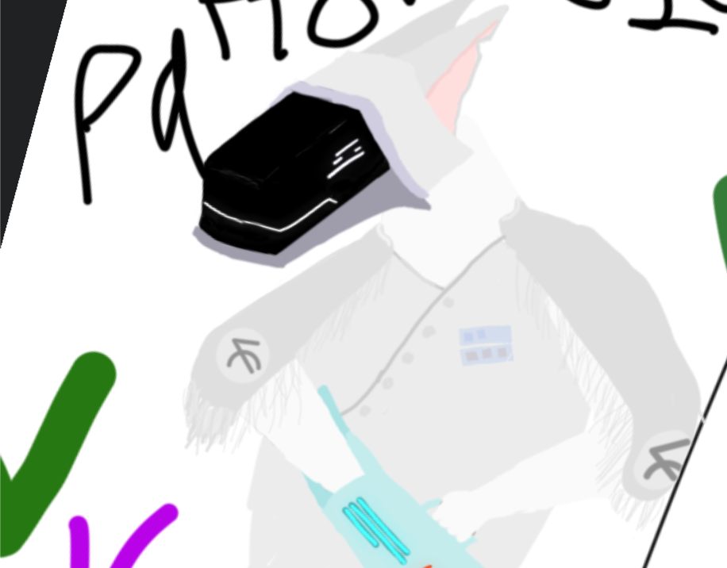

PROTOGEN CHRONICLES
Chapter 1
Gerome, a depressed individual seeking purpose and meaning in a chaotic world. He was built for driving the rich, but sometimes he needs a little adrenaline in the form of underground racing.
Chapter 2
Pixle, built to mine to fuel the ongoing war, he is rather blindly optimistic, but part of that is because he wasn't built for knowledge, and nobody's told him why he mines.
Chapter 3
Silvia, a skilled basic trooper, E-AV-88768 is her serial number that everyone calls her. She is designed for combat, and is proficiant in a wide artilary, she's kniving and rude, the war life hasn't been kind.
Chapter 4
Cooper, a coward. He was deployed to gather info on shipwrecks, how they crashed, when they crashed, who was on board. He then got captured by a strange entity, a green protogen then got him out. Now he tries to stay away from those who might recognize him.
Chapter 5
Dredge, a mysterious figure. Dredge has worked for many different types of people. As a Hitman, he has no qualms about taking on dangerous jobs, and his reputation in the underworld is well-earned.
Chapter 6
Patton, a military officer, has lost his way, he never wanted to cause death, but nobody in this world gets to choose who they want to be. He decided to run off, tear out his tracker, and disappear.